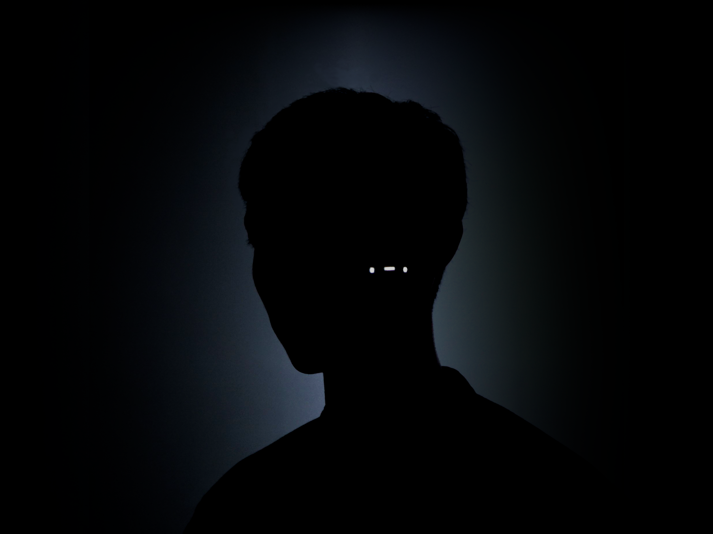

WYXX는 과학과 수리를 기반으로 하는 대상의 정보와 규칙을 관찰한다.
그것에서 나오는 미학적 요소를 분석, 해체, 치환의 과정을 거쳐
논리적이고 주관적인 허구에 가까운 창작물을 제작한다.
위의 행위를 통해 세상의 정보와 규칙을 재정립하고 이해한다.
WYXX observes information and laws of objects based on science and mathematics.
Through the process of analyzing, deconstructing, and replacing the aesthetic elements
that come out of it, Create logical and subjective creations close to fiction.
Redefining and understanding the world's information and rules through the above actions.